library(tidyverse)
#> ── Attaching core tidyverse packages ───────────────────── tidyverse 2.0.0 ──
#> ✔ dplyr 1.2.1 ✔ readr 2.2.0
#> ✔ forcats 1.0.1 ✔ stringr 1.6.0
#> ✔ ggplot2 4.0.3 ✔ tibble 3.3.1
#> ✔ lubridate 1.9.5 ✔ tidyr 1.3.2
#> ✔ purrr 1.2.2
#> ── Conflicts ─────────────────────────────────────── tidyverse_conflicts() ──
#> ✖ dplyr::filter() masks stats::filter()
#> ✖ dplyr::lag() masks stats::lag()
#> ℹ Use the conflicted package (<http://conflicted.r-lib.org/>) to force all conflicts to become errors훑어보기
데이터 분석 과정을 빠르게 훑어보도록 하겠습니다. R로 데이터 분석을 진행하는 과정을 압축적으로 소개합니다.
R에는 그래프를 만들기 위한 여러 시스템이 있지만 ggplot2는 우아하고 다재다능한 시스템 중 하나입니다. ggplot2는 그래프를 설명하고 구축하기 위한 일관된 시스템인 그래픽 문법(grammar of graphics)을 구현합니다. ggplot2를 사용하면 하나의 시스템을 배우고 여러 곳에 적용함으로써 더 빠르고 더 많은 작업을 수행할 수 있습니다.
이 코드 한 줄은 거의 모든 데이터 분석에서 사용하게 될 핵심 tidyverse 패키지들을 로드합니다. 또한 tidyverse의 어떤 함수가 기본 R 함수(또는 이미 로드했을 수 있는 다른 패키지의 함수)와 충돌하는지 알려줍니다1.
이 코드를 실행할 때 there is no package called 'tidyverse'라는 오류 메시지가 나타나면 먼저 설치한 다음 library()를 다시 한 번 실행해야 합니다.
install.packages("tidyverse")
library(tidyverse)패키지는 한 번만 설치하면 되지만 새 세션을 시작할 때마다 로드해야 합니다.
tidyverse 외에도 Palmer Archipelago의 세 섬에 서식하는 펭귄의 신체 측정값이 포함된 penguins 데이터셋이 있는 palmerpenguins 패키지와, 안전한 색상 팔레트(colorblind safe color palette)를 제공하는 ggthemes 패키지를 사용합니다.
library(palmerpenguins)
#>
#> Attaching package: 'palmerpenguins'
#> The following objects are masked from 'package:datasets':
#>
#> penguins, penguins_raw
library(ggthemes)1 첫 걸음
지느러미(flipper)가 더 긴 펭귄은 지느러미가 짧은 펭귄보다 무게가 더 나갈까요, 덜 나갈까요? 아마 이미 정답을 알고 있겠지만 답변을 정확하게 만들어 보세요. 지느러미 길이와 체질량 사이의 관계는 어떻게 보이나요? 양(positive)의 관계인가요? 음(negative)의 관계인가요? 선형(linear)인가요? 비선형(nonlinear)인가요? 펭귄의 종(species)에 따라 관계가 다르게 나타나나요? 펭귄이 사는 섬(island)에 따라서는 어떤가요? 이러한 질문에 대답하는 데 사용할 수 있는 시각화를 만들어 봅시다.
1.1 penguins 데이터 프레임
palmerpenguins에서 찾을 수 있는 penguins 데이터 프레임(data frame)(palmerpenguins::penguins라고도 함)을 사용하여 이러한 질문에 대한 답변을 테스트해 볼 수 있습니다.
데이터 프레임은 변수(열에 있음)와 관측치(행에 있음)의 직사각형 모음입니다. penguins에는 남극 LTER의 Palmer Station과 Dr. Kristen Gorman이 수집하고 제공한 344개의 관측치가 포함되어 있습니다2.
논의를 쉽게 하기 위해 몇 가지 용어를 정의해 보겠습니다.
변수(variable)는 측정할 수 있는 수량, 품질 또는 속성입니다.
값(value)은 측정 시점의 변수 상태입니다. 변수의 값은 측정할 때마다 바뀔 수 있습니다.
관측치(observation)는 유사한 조건에서 수행된 일련의 측정값입니다(일반적으로 관측치 내의 모든 측정은 동시에 동일한 객체에 대해 수행됩니다). 관측치에는 각각 다른 변수와 연결된 여러 값이 포함됩니다. 관측치를 데이터 포인트(data point)라고 부르기도 합니다.
테이블 형식 데이터(Tabular data)는 각각 변수와 관측치에 연결된 값들의 집합입니다. 각 값이 고유한 “셀(cell)”에 배치되고, 각 변수가 고유한 열(column)에, 각 관측치가 고유한 행(row)에 배치된 경우, 테이블 형식 데이터는 깔끔하다(tidy)고 합니다.
이 맥락에서 변수는 모든 펭귄의 속성을 의미하고, 관측치는 단일 펭귄의 모든 속성을 의미합니다.
콘솔에 데이터 프레임의 이름을 입력하면 R이 콘텐츠의 미리보기를 인쇄합니다. 이 미리보기 맨 위에 tibble이라고 적혀 있는 것에 유의하세요. tidyverse에서는 티블(tibbles)이라는 특수한 데이터 프레임을 사용하며 이에 대해서는 곧 자세히 알아볼 것입니다.
penguins
#> # A tibble: 344 × 8
#> species island bill_length_mm bill_depth_mm flipper_length_mm
#> <fct> <fct> <dbl> <dbl> <int>
#> 1 Adelie Torgersen 39.1 18.7 181
#> 2 Adelie Torgersen 39.5 17.4 186
#> 3 Adelie Torgersen 40.3 18 195
#> 4 Adelie Torgersen NA NA NA
#> 5 Adelie Torgersen 36.7 19.3 193
#> 6 Adelie Torgersen 39.3 20.6 190
#> # ℹ 338 more rows
#> # ℹ 3 more variables: body_mass_g <int>, sex <fct>, year <int>이 데이터 프레임에는 8개의 열이 포함되어 있습니다. 모든 변수와 각 변수의 처음 몇 가지 관측치를 볼 수 있는 대안적인 보기 방식을 원한다면 glimpse()를 사용하세요.
glimpse(penguins)
#> Rows: 344
#> Columns: 8
#> $ species <fct> Adelie, Adelie, Adelie, Adelie, Adelie, Adelie, A…
#> $ island <fct> Torgersen, Torgersen, Torgersen, Torgersen, Torge…
#> $ bill_length_mm <dbl> 39.1, 39.5, 40.3, NA, 36.7, 39.3, 38.9, 39.2, 34.…
#> $ bill_depth_mm <dbl> 18.7, 17.4, 18.0, NA, 19.3, 20.6, 17.8, 19.6, 18.…
#> $ flipper_length_mm <int> 181, 186, 195, NA, 193, 190, 181, 195, 193, 190, …
#> $ body_mass_g <int> 3750, 3800, 3250, NA, 3450, 3650, 3625, 4675, 347…
#> $ sex <fct> male, female, female, NA, female, male, female, m…
#> $ year <int> 2007, 2007, 2007, 2007, 2007, 2007, 2007, 2007, 2…penguins의 변수 중에는 다음이 있습니다.
species: 펭귄의 종 (Adelie, Chinstrap, 또는 Gentoo)flipper_length_mm: 펭귄 지느러미의 길이 (밀리미터)body_mass_g: 펭귄의 체질량 (그램)
penguins에 대해 자세히 알아보려면 ?penguins를 실행하여 도움말 페이지를 엽니다.
1.2 최종 목표
이 장에서의 우리의 최종 목표는 펭귄의 종을 고려하여 이 펭귄들의 지느러미 길이와 체질량 사이의 관계를 표시하는 다음 시각화를 재현하는 것입니다.
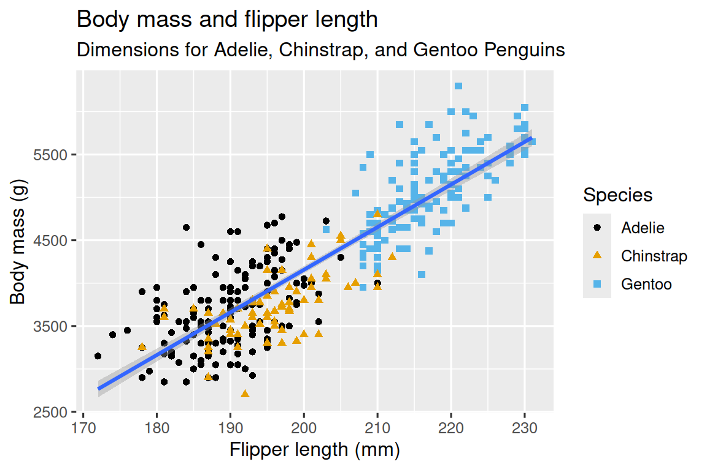
1.3 ggplot 만들기
이 플롯을 단계별로 만들어 봅시다.
ggplot2를 사용할 때 ggplot() 함수로 플롯을 시작하며, 나중에 레이어(layers)를 추가할 플롯 객체를 정의합니다. ggplot()의 첫 번째 인수는 그래프에 사용할 데이터셋이므로 ggplot(data = penguins)는 penguins 데이터를 표시할 준비가 된 빈 그래프를 만듭니다. 하지만 아직 시각화 방법을 알려주지 않았기 때문에 지금은 비어 있습니다.
이것은 그다지 흥미로운 플롯은 아니지만, 플롯의 나머지 레이어를 그릴 빈 캔버스와 같다고 생각할 수 있습니다.
ggplot(data = penguins)다음으로 데이터의 정보가 시각적으로 표현되는 방법을 ggplot()에 알려주어야 합니다. ggplot() 함수의 mapping 인수는 데이터셋의 변수가 플롯의 시각적 속성(심미성(aesthetics))에 매핑되는 방식을 정의합니다.
mapping 인수는 항상 aes() 함수 안에서 정의되며, aes()의 x 및 y 인수는 x축과 y축에 매핑할 변수를 지정합니다.지금은 지느러미 길이(flipper length)를 x 심미성에 매핑하고 체질량(body mass)을 y 심미성에 매핑하겠습니다. ggplot2는 매핑된 변수를 data 인수(이 경우 penguins)에서 찾습니다.
다음 플롯은 이러한 매핑을 추가한 결과를 보여줍니다.
ggplot(
data = penguins,
mapping = aes(x = flipper_length_mm, y = body_mass_g)
)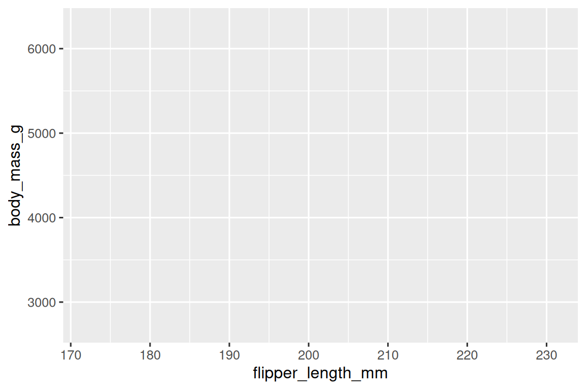
이제 빈 캔버스에 더 많은 구조가 생겼습니다. 지느러미 길이가 표시될 위치(x축)와 체질량이 표시될 위치(y축)가 명확해졌습니다. 하지만 펭귄들 자체는 아직 플롯에 없습니다. 이는 코드에서 데이터 프레임의 관측치를 플롯에 표현하는 방법을 아직 명확하게 지정하지 않았기 때문입니다.
이를 위해 지옴(geom)을 정의해야 합니다. 플롯이 데이터를 표현하는 데 사용하는 기하학적 객체(geometrical object)입니다. 이러한 기하학적 객체는 ggplot2에서 geom_으로 시작하는 함수들을 통해 사용할 수 있습니다. 사람들은 종종 플롯이 사용하는 지옴의 유형으로 플롯을 설명합니다. 예를 들어 막대 차트(bar charts)는 막대 지옴(geom_bar()), 선 차트(line charts)는 선 지옴(geom_line()), 박스플롯(boxplots)은 박스플롯 지옴(geom_boxplot()), 산점도(scatterplots)는 포인트 지옴(geom_point())을 사용하는 식입니다.
geom_point() 함수는 플롯에 점들의 레이어를 추가하여 산점도를 만듭니다. ggplot2에는 각각 플롯에 다른 유형의 레이어를 추가하는 많은 geom 함수들이 있습니다.
ggplot(
data = penguins,
mapping = aes(x = flipper_length_mm, y = body_mass_g)
) +
geom_point()
#> Warning: Removed 2 rows containing missing values or values outside the scale range
#> (`geom_point()`).
이제 우리가 “산점도”라고 생각할 만한 것이 생겼습니다. 아직 우리의 “최종 목표” 플롯과 일치하지는 않지만 이 플롯을 사용하여 탐색의 동기가 된 질문인 “지느러미 길이와 체질량 사이의 관계는 어떻게 보이나요?”에 대답하기 시작할 수 있습니다. 관계는 양의 방향으로 보이고(지느러미 길이가 길어질수록 체질량도 증가함), 상당히 선형적이며(점들이 곡선이 아닌 선을 중심으로 군집함), 중간 정도로 강합니다(선 주위에 산포가 너무 많지 않음).
지느러미가 더 긴 펭귄은 일반적으로 체질량 측면에서 더 큽니다.
이 플롯에 더 많은 레이어를 추가하기 전에 잠시 멈추고 방금 발생한 경고 메시지를 검토해 보겠습니다.
Removed 2 rows containing missing values (`geom_point()`).우리가 이 메시지를 보는 이유는 데이터셋에 체질량 및/또는 지느러미 길이 값이 누락된 펭귄이 두 마리 있으며 ggplot2는 두 값이 모두 없으면 플롯에 이들을 표현할 방법이 없기 때문입니다.
R과 마찬가지로 ggplot2는 누락된 값(missing values)이 결코 조용히 누락되어서는 안 된다는 철학을 지지합니다. 이러한 유형의 경고는 실제 데이터를 작업할 때 볼 수 있는 일반적인 유형의 경고 중 하나입니다. 결측값은 매우 일반적인 문제이며 이 노트 전반에 걸쳐서 배우게 될 것 입니다.
이 장의 나머지 플롯에서는 이 경고를 억제하여 우리가 만드는 모든 플롯 옆에 인쇄되지 않도록 하겠습니다.
1.4 심미성과 레이어 추가
산점도는 두 수치형 변수 사이의 관계를 표시하는 데 유용하지만, 두 변수 사이의 뚜렷한 관계에 대해 회의적인 태도를 취하고 이러한 뚜렷한 관계를 설명하거나 특성을 바꾸는 다른 변수가 있는지 묻는 것은 항상 좋은 생각입니다. 예를 들어 지느러미 길이와 체질량 사이의 관계가 종(species)에 따라 다를까요? 종을 플롯에 통합하여 이러한 변수들 간의 관계에 대한 추가적인 통찰력을 얻을 수 있는지 확인해 보겠습니다. 이를 위해 종을 서로 다른 색상의 점으로 표현하겠습니다.
이를 달성하기 위해 심미성을 수정해야 할까요, 아니면 지옴을 수정해야 할까요? “심미적 매핑 안, 즉 aes() 내부”라고 추측했다면 이미 ggplot2로 데이터 시각화를 만드는 요령을 터득한 것입니다! 그렇지 않더라도 걱정하지 마세요. 이 책 전반에 걸쳐 여러분은 훨씬 더 많은 ggplots를 만들 것이고 직관력을 점검할 더 많은 기회를 갖게 될 것입니다.
ggplot(
data = penguins,
mapping = aes(x = flipper_length_mm, y = body_mass_g, color = species)
) +
geom_point()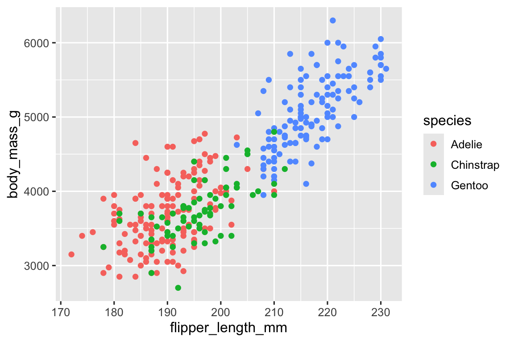
범주형 변수가 심미성에 매핑되면 ggplot2는 변수의 각 고유한 레벨(세 가지 종의 각각)에 심미성의 고유한 값(여기서는 고유한 색상)을 자동으로 할당하는데, 이 과정을 스케일링(scaling)이라고 합니다. ggplot2는 또한 어떤 값이 어떤 레벨에 해당하는지 설명하는 범례(legend)를 추가합니다. 이제 레이어를 하나 더 추가해 보겠습니다. 체질량과 지느러미 길이 사이의 관계를 표시하는 부드러운 곡선(smooth curve)입니다. 진행하기 전에 위의 코드를 다시 참조하고 이것을 기존 플롯에 어떻게 추가할 수 있을지 생각해 보세요.
이것은 우리의 데이터를 나타내는 새로운 기하학적 객체(geometric object)이므로, 점 지옴(point geom) 위에 새로운 지옴을 레이어로 추가할 것입니다. geom_smooth(). 그리고 method = "lm"을 사용하여 선형 모델(linear model)에 기반한 최적 적합선을 그리도록 지정할 것입니다.
ggplot(
data = penguins,
mapping = aes(x = flipper_length_mm, y = body_mass_g, color = species)
) +
geom_point() +
geom_smooth(method = "lm")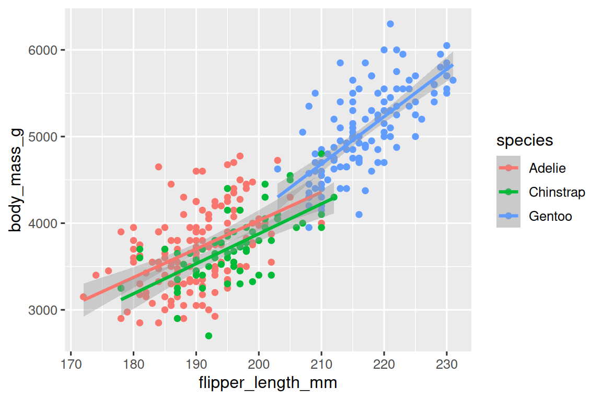
성공적으로 선을 추가했지만 이 플롯은 펭귄의 각 종별로 별도의 선이 있는 반면 전체 데이터셋에 대해 하나의 선만 있는 다른 플롯과는 다릅니다.
심미적 매핑(aesthetic mappings)이 ggplot()에서 전역(global) 수준으로 정의되면 플롯의 후속하는 각 지옴 레이어로 전달됩니다. 그러나 ggplot2의 각 geom 함수는 mapping 인수도 취할 수 있으며, 이를 통해 전역 수준에서 상속된 매핑에 추가되는 지역(local) 수준의 심미적 매핑이 가능합니다. 점은 종에 따라 색상이 지정되기를 원하지만 선은 종별로 분리되기를 원하지 않으므로, geom_point()에 대해서만 color = species를 지정해야 합니다.
ggplot(
data = penguins,
mapping = aes(x = flipper_length_mm, y = body_mass_g)
) +
geom_point(mapping = aes(color = species)) +
geom_smooth(method = "lm")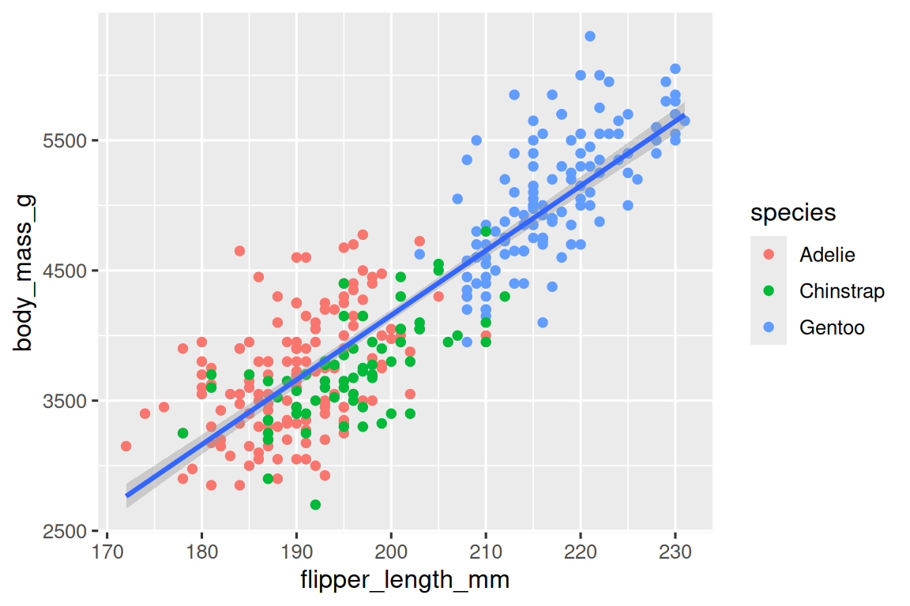
짜잔! 아직 완벽하지는 않지만 최종 목표와 매우 흡사한 모습을 얻었습니다. 아직 각 펭귄 종에 대해 서로 다른 모양(shapes)을 사용하고 레이블(labels)을 개선해야 합니다.
색맹이나 기타 색각 차이로 인해 사람들은 색상을 다르게 인식하므로 플롯에서 색상만을 사용하여 정보를 나타내는 것은 일반적으로 좋은 생각이 아닙니다. 따라서 색상 외에도 species를 shape 심미성에 매핑할 수 있습니다.
ggplot(
data = penguins,
mapping = aes(x = flipper_length_mm, y = body_mass_g)
) +
geom_point(mapping = aes(color = species, shape = species)) +
geom_smooth(method = "lm")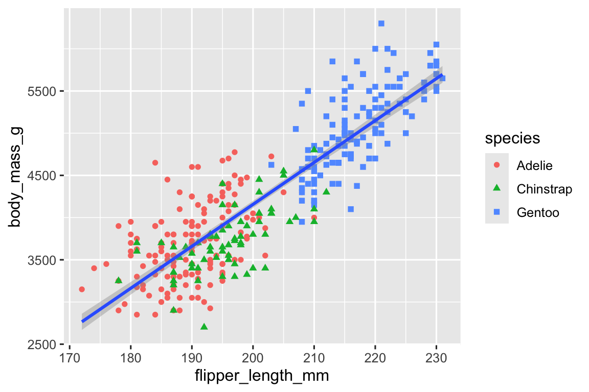
범례도 점의 여러 모양을 반영하여 자동으로 업데이트됩니다.
그리고 마지막으로, 새로운 레이어에 labs() 함수를 사용하여 플롯의 레이블을 개선할 수 있습니다. labs()의 일부 인수는 따로 설명이 필요 없을 수도 있습니다. title은 제목을 추가하고 subtitle은 플롯에 부제목을 추가합니다. 다른 인수는 심미적 매핑과 일치합니다. x는 x축 레이블, y는 y축 레이블이며, color와 shape는 범례에 대한 레이블을 정의합니다. 또한, ggthemes 패키지의 scale_color_colorblind() 함수를 사용하여 색맹에게 안전한 색상 팔레트로 개선할 수 있습니다.
ggplot(
data = penguins,
mapping = aes(x = flipper_length_mm, y = body_mass_g)
) +
geom_point(aes(color = species, shape = species)) +
geom_smooth(method = "lm") +
labs(
title = "Body mass and flipper length",
subtitle = "Dimensions for Adelie, Chinstrap, and Gentoo Penguins",
x = "Flipper length (mm)",
y = "Body mass (g)",
color = "Species",
shape = "Species"
) +
scale_color_colorblind()
드디어 우리의 “최종 목표”와 완벽하게 일치하는 플롯을 완성했습니다!
1.5 연습 문제
penguins에는 몇 개의 행이 있나요? 열은 몇 개인가요?penguins데이터 프레임의bill_depth_mm변수는 무엇을 설명하나요? 자세한 내용을 확인하려면?penguins의 도움말을 읽어보세요.bill_depth_mm대bill_length_mm의 산점도를 만드세요. 즉, y축에bill_depth_mm, x축에bill_length_mm을 두어 산점도를 만듭니다. 이 두 변수 사이의 관계를 설명하세요.species대bill_depth_mm의 산점도를 만들면 어떻게 되나요? 지옴(geom)의 더 나은 선택은 무엇일 수 있을까요?다음에서 오류가 발생하는 이유는 무엇이며 어떻게 수정하시겠습니까?
ggplot(da ta ) +
geom_point()geom_point()에서na.rm인수는 어떤 역할을 하나요? 인수의 기본값은 무엇인가요? 이 인수를 성공적으로TRUE로 설정하여 산점도를 만드세요.이전 연습 문제에서 만든 플롯에 다음 캡션(caption)을 추가하세요. “Data come from the palmerpenguins package.” 힌트:
labs()의 문서를 살펴보세요.다음 시각화를 다시 만드세요.
bill_depth_mm은 어떤 심미성에 매핑해야 하나요? 그리고 그것을 전역 수준에 매핑해야 할까요, 아니면 지옴 수준에 매핑해야 할까요?
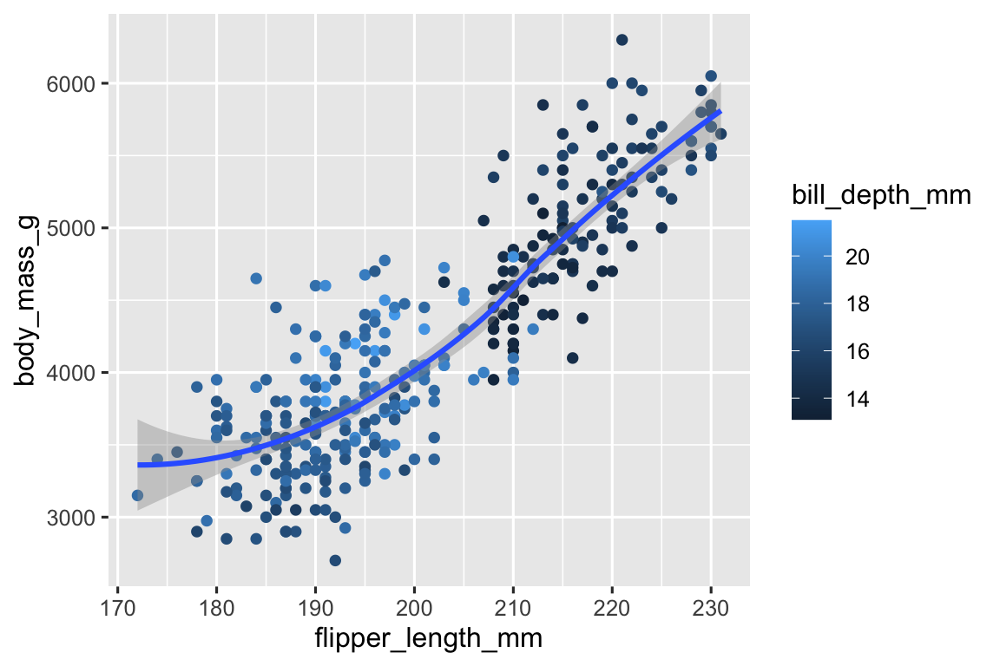
- 이 코드를 머릿속에서 실행해 보고 출력이 어떻게 보일지 예측해 보세요. 그런 다음 R에서 코드를 실행하고 예측을 확인하세요.
ggplot(
data = penguins,
mapping = aes(x = flipper_length_mm, y = body_mass_g, color = island)
) +
geom_point() +
geom_smooth(se = FALSE)- 이 두 그래프가 서로 다르게 보일까요? 왜 그렇게 생각하나요 / 왜 그렇지 않나요?
ggplot(
data = penguins,
mapping = aes(x = flipper_length_mm, y = body_mass_g)
) +
geom_point() +
geom_smooth()
ggplot() +
geom_point(
data = penguins,
mapping = aes(x = flipper_length_mm, y = body_mass_g)
) +
geom_smooth(
data = penguins,
mapping = aes(x = flipper_length_mm, y = body_mass_g)
)2 ggplot2 호출
이러한 입문용 섹션을 넘어가면서 우리는 더 간결한 ggplot2 코드 표현으로 전환할 것입니다. 지금까지 우리는 매우 명시적이었으며, 이는 여러분이 배울 때 유용합니다.
ggplot(
data = penguins,
mapping = aes(x = flipper_length_mm, y = body_mass_g)
) +
geom_point()일반적으로 함수의 첫 번째 또는 두 번째 인수는 너무 중요해서 암기하고 있어야 합니다. ggplot()의 처음 두 인수는 data와 mapping이며, 책의 나머지 부분에서는 이러한 이름을 제공하지 않을 것입니다. 이렇게 하면 타이핑이 줄어들고 불필요한 텍스트의 양이 줄어들어 플롯 간의 차이점을 더 쉽게 알 수 있습니다.
이전 플롯을 더 간결하게 다시 작성하면 다음과 같습니다.
ggplot(penguins, aes(x = flipper_length_mm, y = body_mass_g)) +
geom_point()향후에 여러분은 파이프(|>)에 대해서도 배우게 될 것이며, 이를 사용하면 다음과 같이 해당 플롯을 생성할 수 있습니다.
penguins |>
ggplot(aes(x = flipper_length_mm, y = body_mass_g)) +
geom_point()3 분포 시각화하기
변수의 분포를 시각화하는 방법은 변수의 유형(범주형 또는 수치형)에 따라 다릅니다.
3.1 범주형 변수
변수가 작은 값들의 세트 중 하나만 가질 수 있다면 그 변수는 범주형(categorical)입니다. 범주형 변수의 분포를 조사하려면 막대 차트(bar chart)를 사용할 수 있습니다. 막대의 높이는 각 x 값에 대해 발생한 관측치의 수를 나타냅니다.
ggplot(penguins, aes(x = species)) +
geom_bar()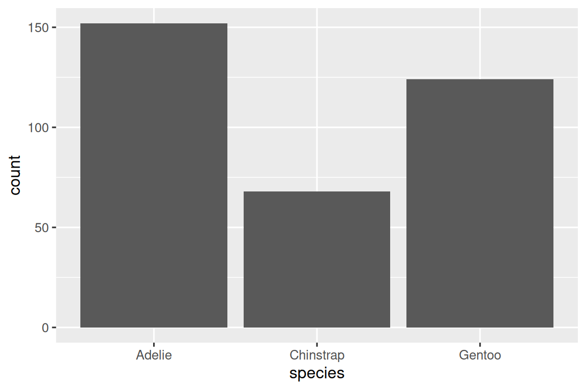
위의 펭귄 species처럼 순서가 지정되지 않은 레벨을 가진 범주형 변수의 막대 플롯에서는 막대를 그 빈도에 따라 재정렬하는 것이 바람직한 경우가 많습니다. 이를 위해서는 변수를 요인(factor, R이 범주형 데이터를 처리하는 방식)으로 변환한 다음 해당 요인의 레벨을 재정렬해야 합니다.
ggplot(penguins, aes(x = fct_infreq(species))) +
geom_bar()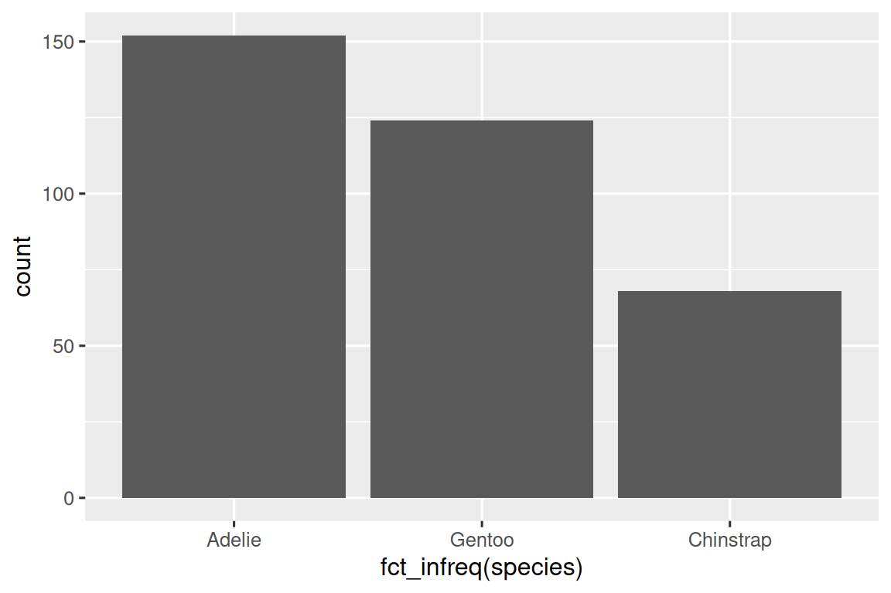
3.2 수치형 변수
변수가 광범위한 수치 값을 가질 수 있고 이러한 값을 더하거나 빼거나 평균을 내는 것이 의미가 있는 경우 해당 변수는 수치형(numerical)(또는 양적(quantitative))입니다. 수치형 변수는 연속형(continuous)이거나 이산형(discrete)일 수 있습니다.
연속형 변수의 분포에 일반적으로 사용되는 시각화 중 하나는 히스토그램(histogram)입니다.
ggplot(penguins, aes(x = body_mass_g)) +
geom_histogram(binwidth = 200)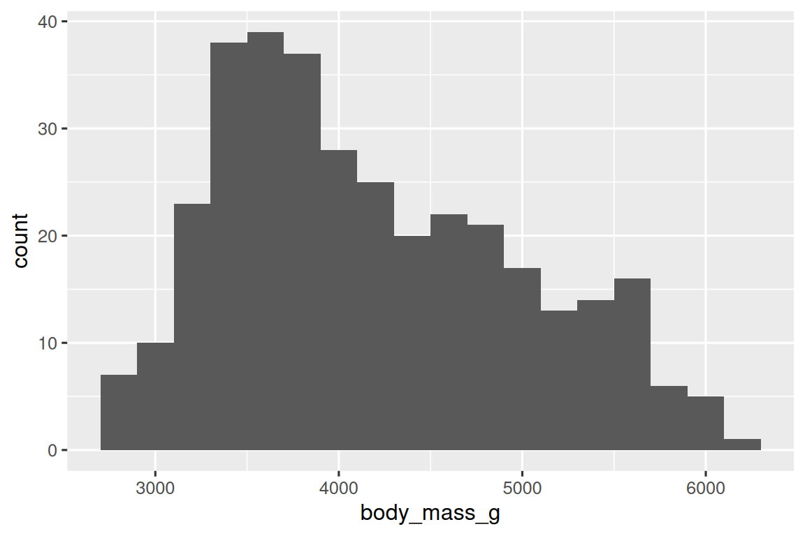
히스토그램은 x축을 동일한 간격의 빈(bins)으로 나눈 다음 막대의 높이를 사용하여 각 빈에 속하는 관측치의 수를 표시합니다. 위의 그래프에서 높은 막대는 39개의 관측치가 3,500그램에서 3,700그램 사이의 body_mass_g 값을 가지고 있음을 보여주며, 이 값은 막대의 왼쪽 및 오른쪽 가장자리입니다.
히스토그램의 구간(interval) 너비는 x 변수의 단위로 측정되는 binwidth 인수를 사용하여 설정할 수 있습니다. 서로 다른 구간 너비(binwidths)가 서로 다른 패턴을 드러낼 수 있으므로 히스토그램으로 작업할 때는 항상 다양한 구간 너비를 탐색해야 합니다.
아래 플롯에서는 20의 구간 너비가 너무 좁아서 막대가 너무 많아져 분포의 모양을 파악하기 어렵습니다. 유사하게 2,000의 구간 너비는 너무 높아서 모든 데이터가 단 3개의 막대에만 들어가 분포의 형태를 파악하기 어렵습니다. 200의 구간 너비는 합리적인 균형을 제공합니다.
ggplot(penguins, aes(x = body_mass_g)) +
geom_histogram(binwidth = 20)
ggplot(penguins, aes(x = body_mass_g)) +
geom_histogram(binwidth = 2000)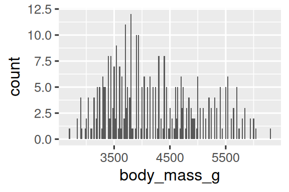
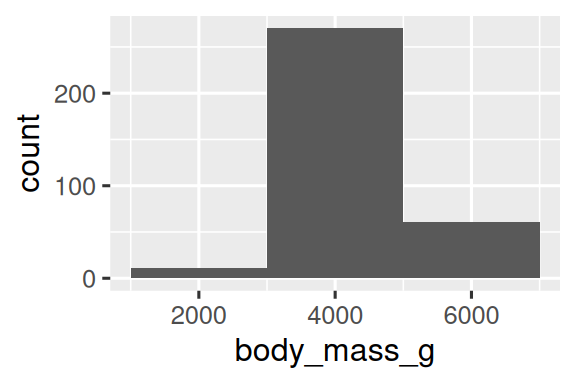
수치형 변수의 분포를 시각화하는 또 다른 방법은 밀도 플롯(density plot)입니다. 밀도 플롯은 히스토그램의 부드러운 버전이며 특히 근본적으로 매끄러운 분포에서 나온 연속형 데이터의 경우 실용적인 대안입니다. 여기서는 geom_density()가 밀도를 추정하는 방법(함수 문서에서 이에 대해 더 자세히 읽을 수 있음)에 대해서는 다루지 않겠지만, 비유를 통해 밀도 곡선이 어떻게 그려지는지 설명해 보겠습니다.
나무 블록으로 만든 히스토그램을 상상해 보세요. 그 위에 요리된 스파게티 가닥을 떨어뜨린다고 상상해 보세요. 블록 위에 얹힌 스파게티 가닥의 모양을 밀도 곡선의 모양이라고 생각할 수 있습니다. 히스토그램보다 세부 사항은 덜 표시하지만, 특히 최빈값(modes)과 왜도(skewness)와 관련하여 분포의 모양을 빠르게 파악하기 쉽게 해줍니다.
ggplot(penguins, aes(x = body_mass_g)) +
geom_density()
#> Warning: Removed 2 rows containing non-finite outside the scale range
#> (`stat_density()`).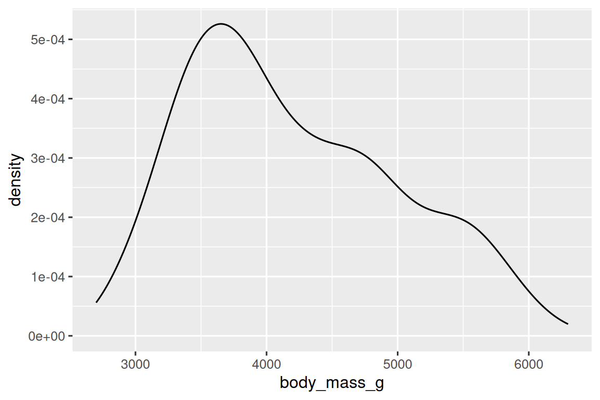
3.3 연습 문제
species를y심미성에 할당하여penguins의species막대 플롯을 만드세요. 이 플롯은 어떻게 다른가요?다음 두 플롯은 어떻게 다른가요? 막대의 색상을 변경하는 데
color와fill중 어느 심미성이 더 유용한가요?
ggplot(penguins, aes(x = species)) +
geom_bar(color = "red")
ggplot(penguins, aes(x = species)) +
geom_bar(fill = "red")geom_histogram()의bins인수는 어떤 역할을 하나요?diamonds데이터셋에서carat변수의 히스토그램을 만드세요. 다양한 구간 너비(binwidths)를 실험해 보세요. 어떤 구간 너비가 흥미로운 패턴을 드러내나요?
4 관계 시각화하기
관계를 시각화하려면 플롯의 심미성에 매핑된 변수가 두 개 이상 있어야 합니다. 다음 섹션에서는 둘 이상의 변수 간의 관계를 시각화하는 데 일반적으로 사용되는 플롯과 이를 만드는 데 사용되는 지옴(geoms)에 대해 배울 것입니다.
4.1 수치형 변수와 범주형 변수
수치형 변수와 범주형 변수 사이의 관계를 시각화하기 위해 나란히 놓인 박스 플롯(side-by-side box plots)을 사용할 수 있습니다. 박스플롯(boxplot)은 분포를 설명하는 위치 측도(백분위수)에 대한 시각적 약어의 한 유형입니다. 또한 잠재적인 이상치(outliers)를 식별하는 데도 유용합니다. 아래 플롯에 표시된 것처럼 각 박스플롯은 다음으로 구성됩니다.
- 분포의 25백분위수에서 75백분위수까지 뻗어 있는 데이터의 중간 절반의 범위를 나타내는 상자(box)이며 이 거리를 사분위수 범위(interquartile range, IQR)라고 합니다.
- 상자 중앙에는 분포의 중앙값(median), 즉 50백분위수를 표시하는 선이 있습니다.
- 이 세 개의 선은 분포의 퍼짐(spread) 정도와 분포가 중앙값을 중심으로 대칭인지 또는 한쪽으로 치우쳐 있는지를 파악하게 해줍니다.
- 상자의 양쪽 가장자리에서 IQR의 1.5배 이상 떨어진 곳에 있는 관측치를 표시하는 시각적 점들입니다. 이러한 이상점(outlying points)은 흔치 않기 때문에 개별적으로 플로팅됩니다.
- 상자의 양쪽 끝에서 연장되어 분포 내에서 이상치가 아닌 먼 지점까지 이어지는 선(또는 수염, whisker)입니다.
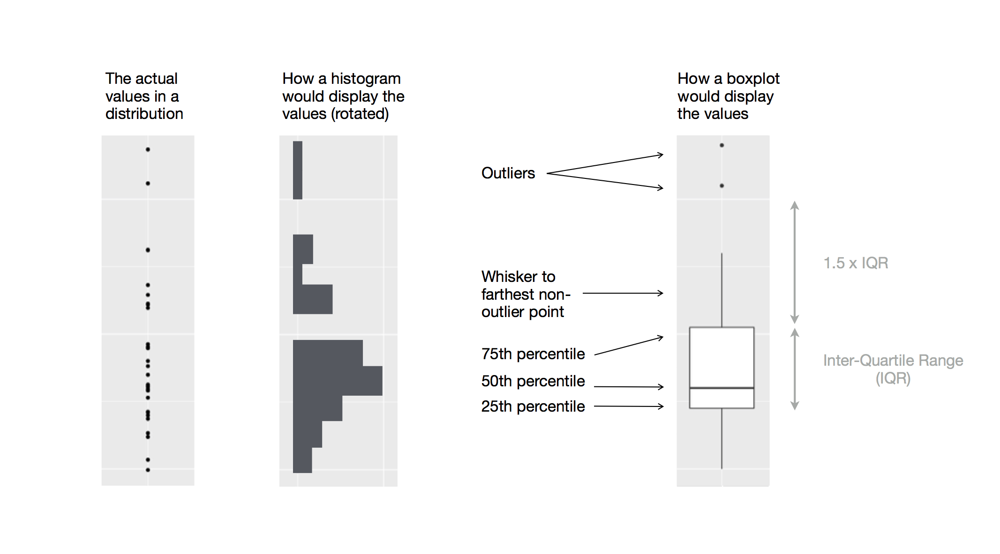
geom_boxplot()을 사용하여 종별 체질량 분포를 살펴보겠습니다.
ggplot(penguins, aes(x = species, y = body_mass_g)) +
geom_boxplot()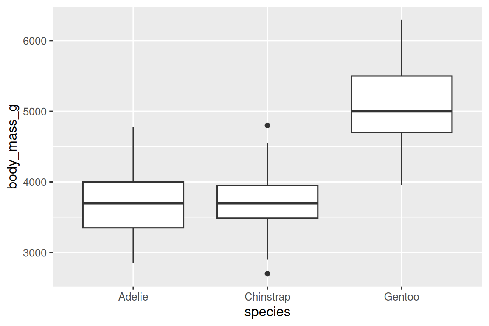
또는 geom_density()를 사용하여 밀도 플롯을 만들 수 있습니다.
ggplot(penguins, aes(x = body_mass_g, color = species)) +
geom_density(linewidth = 0.75)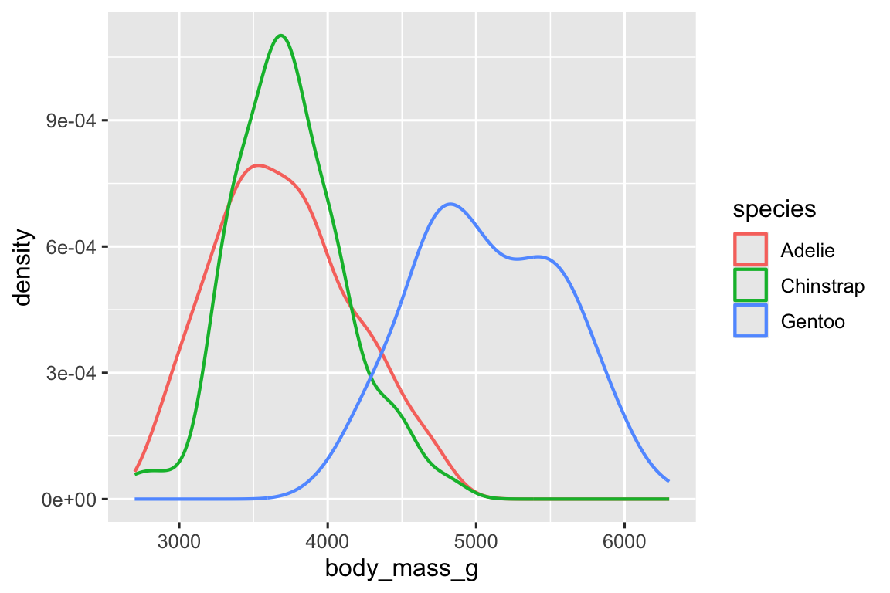
우리는 배경에 비해 선이 눈에 띄게 보이도록 linewidth 인수를 사용하여 선의 두께도 커스터마이즈했습니다.
또한 species를 color 및 fill 심미성 모두에 매핑하고 alpha 심미성을 사용하여 채워진 밀도 곡선에 투명도를 추가할 수 있습니다.
이 심미성은 0(완전 투명)에서 1(완전 불투명) 사이의 값을 갖습니다. 다음 플롯에서는 이것이 0.5로 설정(set)되어 있습니다.
ggplot(penguins, aes(x = body_mass_g, color = species, fill = species)) +
geom_density(alpha = 0.5)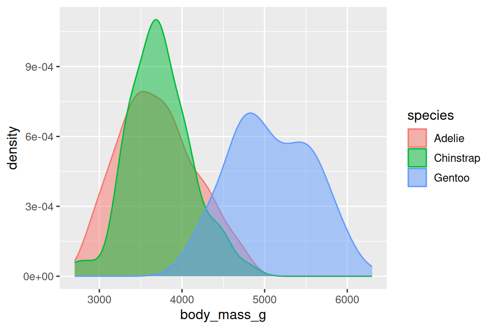
여기서 우리가 사용한 용어에 주목하세요.
- 해당 심미성이 나타내는 시각적 속성이 변수의 값에 따라 변하도록 하려면 변수를 심미성에 매핑(map)합니다.
- 그렇지 않으면 심미성의 값을 설정(set)합니다.
4.2 두 범주형 변수
두 범주형 변수 사이의 관계를 시각화하기 위해 누적 막대 플롯(stacked bar plots)을 사용할 수 있습니다. 예를 들어 다음 두 개의 누적 막대 플롯은 모두 island와 species 간의 관계를 표시하거나, 구체적으로는 각 섬 내의 species 분포를 시각화합니다.
첫 번째 플롯은 각 섬에 있는 각 펭귄 종의 빈도를 보여줍니다. 빈도 플롯은 각 섬에 같은 수의 Adelie가 있음을 보여줍니다. 그러나 각 섬 내 비율의 균형은 잘 파악되지 않습니다.
ggplot(penguins, aes(x = island, fill = species)) +
geom_bar()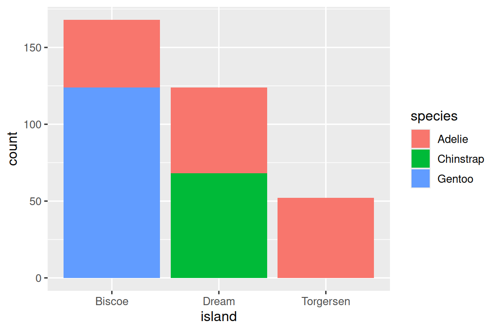
두 번째 플롯은 지옴에서 position = "fill"을 설정하여 생성된 상대 빈도(relative frequency) 플롯으로, 섬 전체에 걸친 불균등한 펭귄 수에 영향을 받지 않기 때문에 섬 간의 종 분포를 비교하는 데 더 유용합니다. 이 플롯을 통해 Gentoo 펭귄은 모두 Biscoe 섬에 살고 있으며 해당 섬에 있는 펭귄의 대략 75%를 차지하고, Chinstrap은 모두 Dream 섬에 살며 해당 섬에 있는 펭귄의 대략 50%를 차지하며, Adelie는 3개의 섬에 모두 살고 Torgersen에 있는 펭귄의 전부를 차지한다는 것을 알 수 있습니다.
ggplot(penguins, aes(x = island, fill = species)) +
geom_bar(position = "fill")이러한 막대 차트를 만들 때 막대로 나눌 변수는 x 심미성에 매핑하고 막대 안의 색상을 변경할 변수는 fill 심미성에 매핑합니다. 안타깝게도 ggplot2는 기본적으로 y축에 "count"라는 레이블을 붙이지만, 이는 y축 레이블을 "proportion"으로 지정하는 labs() 레이어를 추가하여 재정의(override)할 수 있습니다.
ggplot(penguins, aes(x = island, fill = species)) +
geom_bar(position = "fill") +
labs(y = "proportion")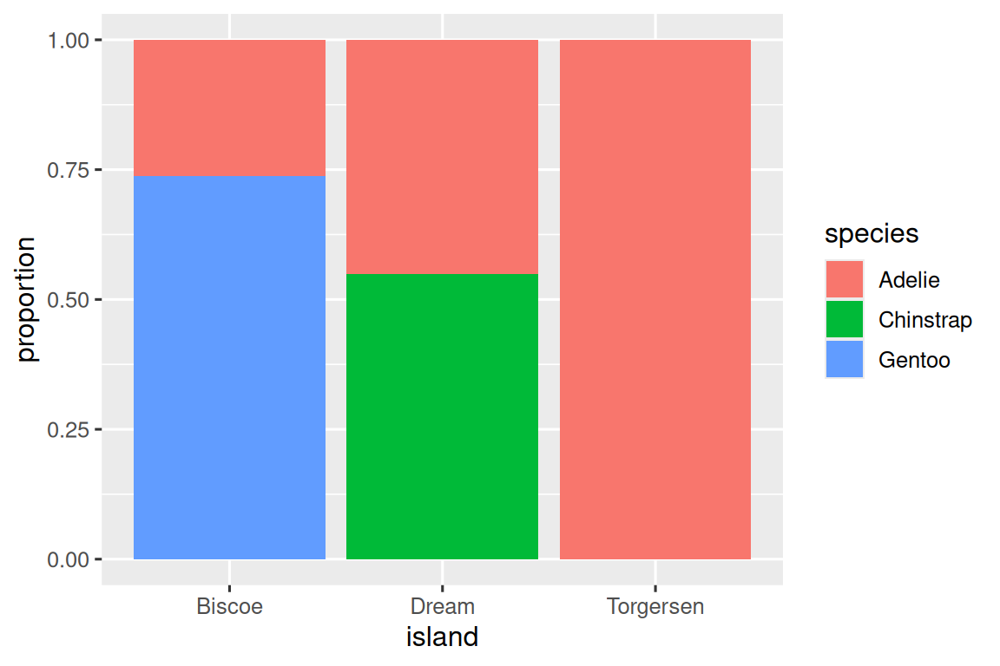
4.3 두 수치형 변수
지금까지 두 수치형 변수 사이의 관계를 시각화하기 위해 ( geom_point()로 생성된 ) 산점도와 ( geom_smooth()로 생성된 ) 부드러운 곡선에 대해 배웠습니다. 산점도는 두 수치형 변수 사이의 관계를 시각화하는 데 아마도 흔히 사용되는 플롯일 것입니다.
ggplot(penguins, aes(x = flipper_length_mm, y = body_mass_g)) +
geom_point()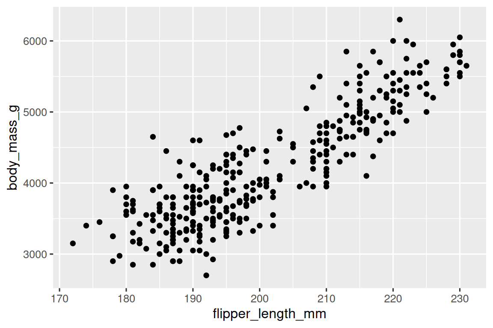
4.4 3개 이상의 변수
변수를 추가 심미성에 매핑하여 플롯에 통합할 수 있습니다. 예를 들어 다음 산점도에서 점의 색상은 종(species)을 나타내고 점의 모양은 섬(islands)을 나타냅니다.
ggplot(penguins, aes(x = flipper_length_mm, y = body_mass_g)) +
geom_point(aes(color = species, shape = island))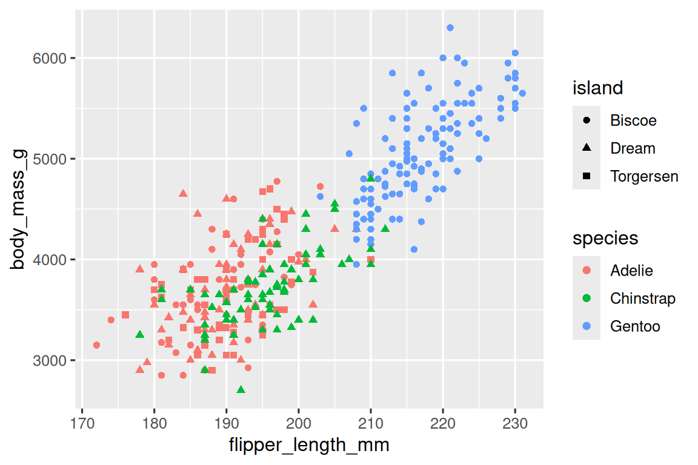
그러나 플롯에 너무 많은 심미적 매핑을 추가하면 플롯이 복잡해져 이해하기가 어렵습니다. 특히 범주형 변수에 유용한 또 다른 방법은 플롯을 각각 데이터의 하위 집합(subset) 하나를 표시하는 하위 플롯(subplots)인 패싯(facets)으로 분할하는 것입니다.
단일 변수로 플롯을 패싯하려면 facet_wrap()을 사용하세요. facet_wrap()의 첫 번째 인수는 공식(formula)3이며, ~ 뒤에 변수 이름을 붙여 만듭니다. facet_wrap()에 전달하는 변수는 범주형이어야 합니다.
ggplot(penguins, aes(x = flipper_length_mm, y = body_mass_g)) +
geom_point(aes(color = species, shape = species)) +
facet_wrap(~island)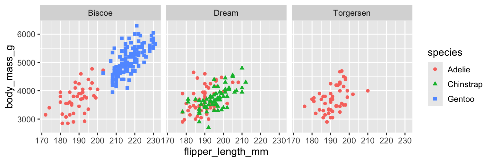
4.5 연습 문제
ggplot2 패키지와 함께 제공되는
mpg데이터 프레임에는 38개의 자동차 모델(car models)에 대해 미국 환경 보호국(US Environmental Protection Agency)이 수집한 234개의 관측치가 포함되어 있습니다.mpg의 어떤 변수가 범주형인가요? 어떤 변수가 수치형인가요? (힌트: 데이터셋에 대한 문서를 읽으려면?mpg를 입력하세요.)mpg를 실행할 때 이 정보를 어떻게 볼 수 있나요?mpg데이터 프레임을 사용하여hwy대displ의 산점도를 만드세요. 다음으로 세 번째 수치형 변수를color에 매핑한 다음,size에, 그런 다음color와size둘 다에, 마지막으로shape에 매핑해 보세요. 이러한 심미성은 범주형 변수와 수치형 변수에 대해 각각 어떻게 다르게 작동하나요?
3.hwy 대 displ의 산점도에서 세 번째 변수를 linewidth에 매핑하면 어떻게 되나요?
동일한 변수를 여러 심미성에 매핑하면 어떻게 되나요?
bill_depth_mm대bill_length_mm의 산점도를 만들고 점을species로 색칠하세요. 종별 색상을 추가하면 이 두 변수 간의 관계에 대해 무엇이 드러나나요?species로 패싯을 나누는 것은 어떤가요?다음 코드가 두 개의 별도 범례를 생성하는 이유는 무엇인가요? 두 범례를 하나로 결합하려면 어떻게 수정하시겠습니까?
ggplot(
data = penguins,
mapping = aes(
x = bill_length_mm,
y = bill_depth_mm,
color = species,
shape = species
)
) +
geom_point() +
labs(color = "Species")- 다음 두 개의 누적 막대 플롯을 만드세요. 첫 번째 플롯으로 어떤 질문에 답할 수 있나요? 두 번째 플롯으로 어떤 질문에 답할 수 있나요?
ggplot(penguins, aes(x = island, fill = species)) +
geom_bar(position = "fill")
ggplot(penguins, aes(x = species, fill = island)) +
geom_bar(position = "fill")5 플롯 저장하기
플롯을 만들고 나면 다른 곳에서 사용할 수 있는 이미지로 저장하여 R에서 꺼내고 싶을 수 있습니다. 이것이 최근에 만든 플롯을 디스크에 저장하는 ggsave()의 역할입니다.
ggplot(penguins, aes(x = flipper_length_mm, y = body_mass_g)) +
geom_point()
ggsave(filename = "penguin-plot.png")이 코드는 플롯을 작업 디렉토리(working directory)에 저장하며, 이 개념은 아래 뒷 부분에서 좀 더 다뤄보도록 하겠습니다.
width와 height를 지정하지 않으면 현재 플로팅 기기(plotting device)의 차원에서 가져옵니다. 재현 가능한 코드를 원한다면 이들을 지정하는 실천이 좋습니다. 문서에서 ggsave()에 대해 더 자세히 알아볼 수 있습니다.
그러나 일반적으로 코드와 산문을 인터리브(interleave)하고 작성(write-ups) 시에 플롯을 자동으로 포함할 수 있게 해주는 재현 가능한 저작 시스템인 Quarto를 사용하여 최종 보고서를 조립하는 것을 권장합니다.
5.1 연습 문제
- 다음 코드 줄을 실행하세요. 두 플롯 중 어느 것이
mpg-plot.png로 저장되나요? 왜 그런가요?
ggplot(mpg, aes(x = class)) +
geom_bar()
ggplot(mpg, aes(x = cty, y = hwy)) +
geom_point()
ggsave("mpg-plot.png")- 위 코드에서 플롯을 PNG가 아닌 PDF로 저장하려면 무엇을 변경해야 하나요? 어떤 유형의 이미지 파일이
ggsave()에서 작동할지 어떻게 알아낼 수 있을까요?
6 흔한 문제들
R 코드를 실행하기 시작하면 문제에 부딪힐 가능성이 높습니다. 걱정하지 마세요. 누구에게나 일어나는 일입니다. 우리 모두 수년 동안 R 코드를 작성해 왔지만 여전히 매일 첫 번째 시도에서 작동하지 않는 코드를 작성합니다!
실행 중인 코드를 책의 코드와 주의 깊게 비교하는 것부터 시작하세요.
R은 극도로 까다롭기 때문에 잘못 놓인 문자 하나가 모든 것을 바꿀 수 있습니다. 모든 (가 )와 일치하고 모든 "가 다른 "와 짝을 이루는지 확인하세요. 때로는 코드를 실행해도 아무 일도 일어나지 않을 때가 있습니다.
콘솔의 왼쪽을 확인하세요. +가 표시되어 있다면 R이 입력한 표현식이 완전하지 않다고 생각하여 여러분이 입력 완료하기를 기다리고 있다는 뜻입니다. 이 경우에는 현재 명령어의 처리를 중단하기 위해 ESCAPE 키를 눌러 처음부터 다시 시작하는 것이 보통 쉽습니다.
ggplot2 그래픽을 만들 때 흔히 발생하는 문제 중 하나는 +를 잘못된 곳에 놓는 것입니다. +는 줄의 시작이 아니라 줄의 끝에 와야 합니다. 다시 말해, 실수로 다음과 같은 코드를 작성하지 않았는지 확인하세요.
ggplot(data = mpg)
+geom_point(mapping = aes(x = displ, y = hwy))여전히 막힌다면 도움말을 사용해 보세요. 콘솔에서 ?function_name을 실행하거나 RStudio에서 함수 이름을 강조 표시하고 F1을 누르면 모든 R 함수에 대한 도움말을 얻을 수 있습니다. 도움말이 별로 도움이 되지 않는 것 같더라도 걱정하지 마세요. 대신 예제로 건너뛰어 여러분이 시도하는 것과 일치하는 코드를 찾아보세요.
그래도 도움이 되지 않는다면 오류 메시지를 주의 깊게 읽어보세요. 때로는 그 안에 답이 묻혀 있을 수도 있습니다! 하지만 R을 처음 사용할 때는 답이 오류 메시지에 있더라도 이를 어떻게 이해해야 할지 아직 모를 수 있습니다. 또 다른 훌륭한 도구는 Google입니다. 누군가가 같은 문제를 겪고 온라인에서 도움을 받았을 가능성이 높으므로 오류 메시지를 구글에 검색해 보세요. 혹은 LLM을 사용하는 방법도 있습니다.
conflicted 패키지를 사용하면 해당 메시지를 없애고 필요에 따라 충돌 해결을 강제할 수 있으며, 이는 더 많은 패키지를 로드할수록 중요해집니다. conflicted에 대한 자세한 내용은 https://conflicted.r-lib.org에서 확인할 수 있습니다.↩︎
Horst AM, Hill AP, Gorman KB (2020). palmerpenguins: Palmer Archipelago (Antarctica) penguin data. R package version 0.1.0. https://allisonhorst.github.io/palmerpenguins/. doi: 10.5281/zenodo.3960218.↩︎
여기서 “공식(formula)”은
~에 의해 생성된 것의 이름이며 “방정식(equation)”과 동의어가 아닙니다.↩︎